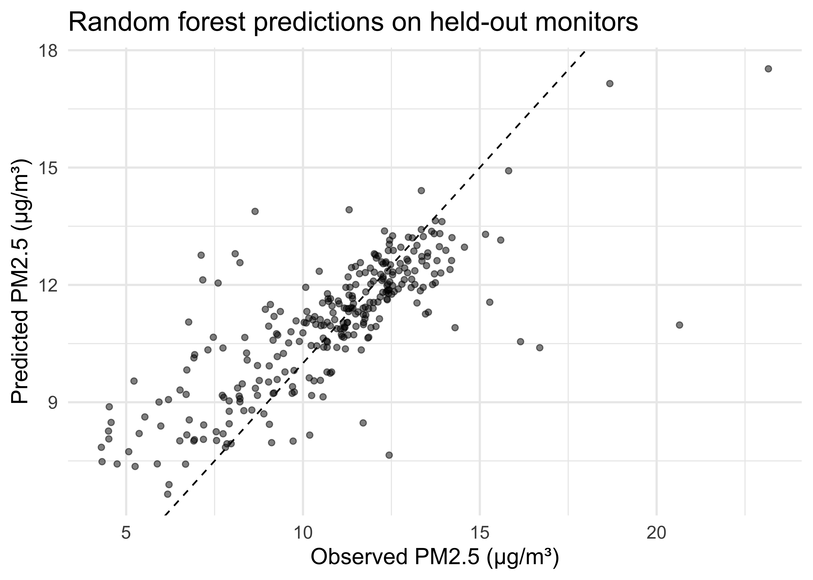

# in your CS02 repo, the file is at "data/pm25_data.csv"
pm <- read_csv("OCS_data/data/raw/pm25_data.csv") |>
mutate(across(c(id, fips, zcta), as.factor),
city = case_when(city == "Not in a city" ~ "Not in a city",
city != "Not in a city" ~ "In a city"))
set.seed(1234)
pm_split <- initial_split(pm, prop = 2/3)
train_pm <- training(pm_split)
test_pm <- testing(pm_split)16-putting-it-together
Putting the Model Together
Q&A
Q:
A:
Course Announcements
Due Dates:
- ⌨️ Lab 07 due Fri 11/20 (11:59 PM)
- 💻 CS02 & 🔘 CS02 team eval survey due Sun 11/22 (11:59 PM)
- 📄 Final Project rough draft (qmd + HTML in your final project repo) due Sun 11/22 (11:59 PM)
- 🔘 Lecture Participation survey “due” after class
Agenda
- The whole pipeline, on one slide
- One pass through it, start to finish (CS02 data)
- Common pitfalls
- Mapping it onto your CS02 report
Why today?
Last time students told us:
“We did the whole recipe lecture in one lecture…a little bit confusing.”
. . .
So today: no new functions. Just the order things happen in, and why.
The pipeline
One slide
| Step | Question it answers | tidymodels |
|---|---|---|
| 1. Split | What data do I never peek at until the end? | initial_split(), training(), testing() |
| 2. Recipe | What are my outcome, predictors, and pre-processing steps? | recipe(), update_role(), step_*() |
| 3. Model | What kind of model, which engine, which mode? | linear_reg(), rand_forest(), set_engine(), set_mode() |
| 4. Workflow | Recipe + model, bundled together | workflow(), add_recipe(), add_model() |
| 5. Resample | How well does each candidate model do on data it wasn’t fit on? | vfold_cv(), fit_resamples(), collect_metrics() |
| 6. Final fit | How does my chosen model do on the test set (once!)? | last_fit(), collect_metrics() |
| 7. Interpret | What does this mean for my question? | collect_predictions(), vip::vip(), a plot + a sentence |
🧠 Before we code: where have we already done each of these steps?
One pass, start to finish
1. Split
Wrangling that doesn’t learn anything from the data (like recoding city) can happen before the split. Anything that learns from the data (correlations, variances, means) goes in the recipe.
2. Recipe
lm_rec <- recipe(train_pm) |>
update_role(everything(), new_role = "predictor") |>
update_role(value, new_role = "outcome") |>
update_role(id, new_role = "id variable") |>
update_role("fips", new_role = "county id") |>
step_rm(county, zcta) |>
step_dummy(state, city) |>
step_nzv(all_predictors()) |>
step_corr(all_numeric_predictors()) |>
step_lincomb(all_numeric_predictors()). . .
A recipe is a plan. Nothing has been computed yet (no prep()/bake() needed when we use a workflow).
3. Model(s)
We’ll compare two candidates:
lm_model <- linear_reg() |>
set_engine("lm") |>
set_mode("regression")
rf_model <- rand_forest(mtry = 10, min_n = 3) |>
set_engine("randomForest") |>
set_mode("regression"). . .
Random forest gets its own recipe (it can use categorical variables directly):
rf_rec <- recipe(train_pm) |>
update_role(everything(), new_role = "predictor") |>
update_role(value, new_role = "outcome") |>
update_role(id, new_role = "id variable") |>
update_role("fips", new_role = "county id") |>
step_rm(county, zcta) |>
step_novel(state) |>
step_string2factor(city) |>
step_nzv(all_predictors()) |>
step_corr(all_numeric_predictors())4. Workflows
lm_wflow <- workflow() |>
add_recipe(lm_rec) |>
add_model(lm_model)
rf_wflow <- workflow() |>
add_recipe(rf_rec) |>
add_model(rf_model). . .
🧠 Who can explain the difference between a recipe, a model, and a workflow…in one sentence each?
5. Resample to choose a model
set.seed(1234)
pm_folds <- vfold_cv(train_pm, v = 4)
lm_cv <- fit_resamples(lm_wflow, resamples = pm_folds)
rf_cv <- fit_resamples(rf_wflow, resamples = pm_folds)
bind_rows(
collect_metrics(lm_cv) |> mutate(model = "linear regression"),
collect_metrics(rf_cv) |> mutate(model = "random forest")
) |>
select(model, .metric, mean, std_err)# A tibble: 4 × 4
model .metric mean std_err
<chr> <chr> <dbl> <dbl>
1 linear regression rmse 2.12 0.0402
2 linear regression rsq 0.306 0.0253
3 random forest rmse 1.67 0.100
4 random forest rsq 0.592 0.0513. . .
We choose using cross-validation on the training data, not the test set.
6. Final fit: touch the test set once
rf_final <- last_fit(rf_wflow, split = pm_split)
collect_metrics(rf_final)# A tibble: 2 × 4
.metric .estimator .estimate .config
<chr> <chr> <dbl> <chr>
1 rmse standard 1.73 Preprocessor1_Model1
2 rsq standard 0.605 Preprocessor1_Model1. . .
last_fit() fits on all of the training data, then evaluates on the test data. Once.
7. Interpret
collect_predictions(rf_final) |>
ggplot(aes(x = value, y = .pred)) +
geom_point(alpha = 0.5) +
geom_abline(linetype = "dashed") +
labs(x = "Observed PM2.5 (µg/m³)", y = "Predicted PM2.5 (µg/m³)",
title = "Random forest predictions on held-out monitors") +
theme_minimal(base_size = 14)
7. Interpret (cont.)
test_rmse <- collect_metrics(rf_final) |>
filter(.metric == "rmse") |>
pull(.estimate)With what accuracy can we predict US annual average air pollution concentrations?
. . .
On monitors the model never saw, predictions were off by about 1.73 µg/m³ (RMSE), on a scale where values range from roughly 3 to 23 µg/m³.
. . .
🧠 Is that good? Good enough? For whom? (That’s the discussion section of your report.)
Common pitfalls
Pitfalls we see every quarter
- Pre-processing before splitting (data leakage): the test set “leaks” into your choices
- Choosing a model with the test set: use cross-validation for that; the test set is for the end
- Reporting training performance as if it were test performance
- Forgetting
set.seed(): results change every time you render - New levels in the test set (remember
cityon Friday?):step_novel()or rethink the variable - RMSE without units or context: always interpret it in the units of the outcome
Your CS02 report
Where each step goes
| Pipeline step | Report section |
|---|---|
| Split, recipe | Data (wrangling) & Methods |
| Models, resampling | Analysis |
| Final fit | Results |
| Interpret | Results & Discussion (and limitations!) |
Your Turn
With your CS02 group:
- Fill in the pipeline table for your analysis (including your extension)
- Which step does your extension change? (new data? new recipe step? new model?)
- Where are you currently stuck?
Put a green sticky on the front of your computer when you’re done. Put a pink if you want help/have a question.
Recap
- Can you list the steps of the modeling pipeline, in order, and say why that order matters?
- Can you explain the difference between a recipe, a model, and a workflow?
- Do you know which data (training vs. testing) to use when choosing vs. evaluating a model?
- Can you interpret RMSE in the context of the CS02 question?